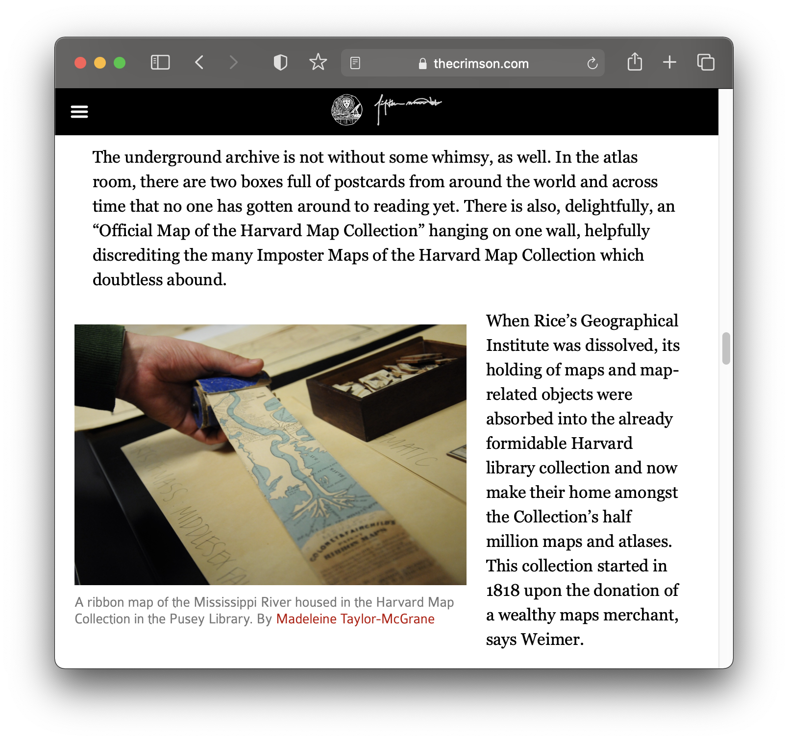
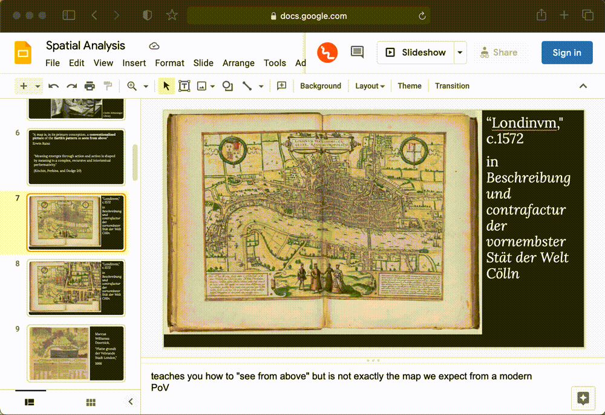
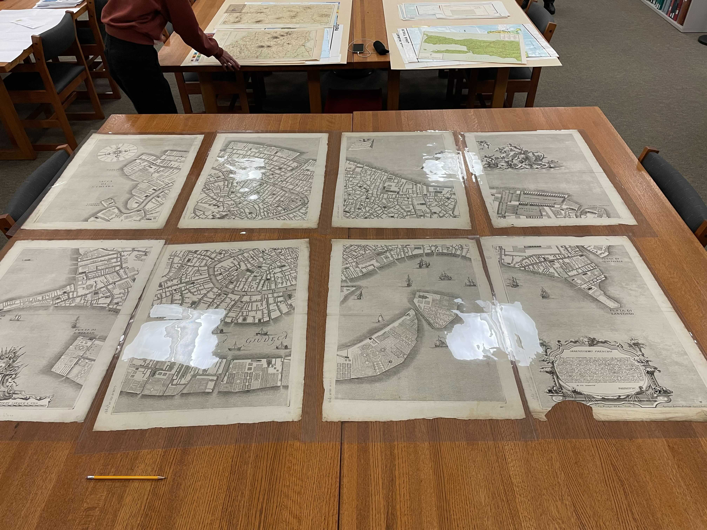
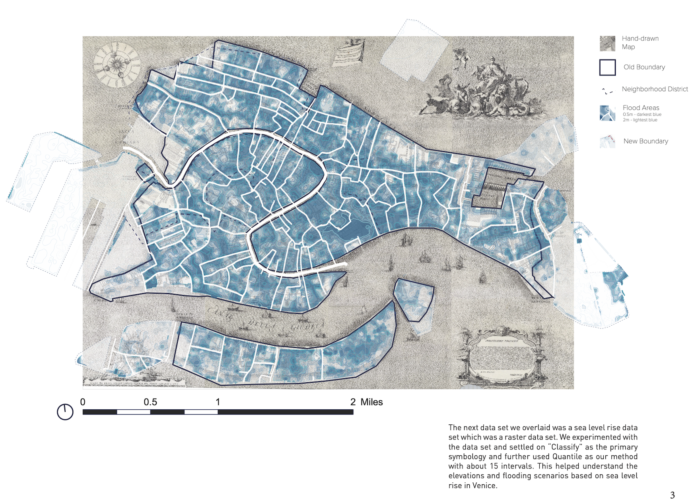
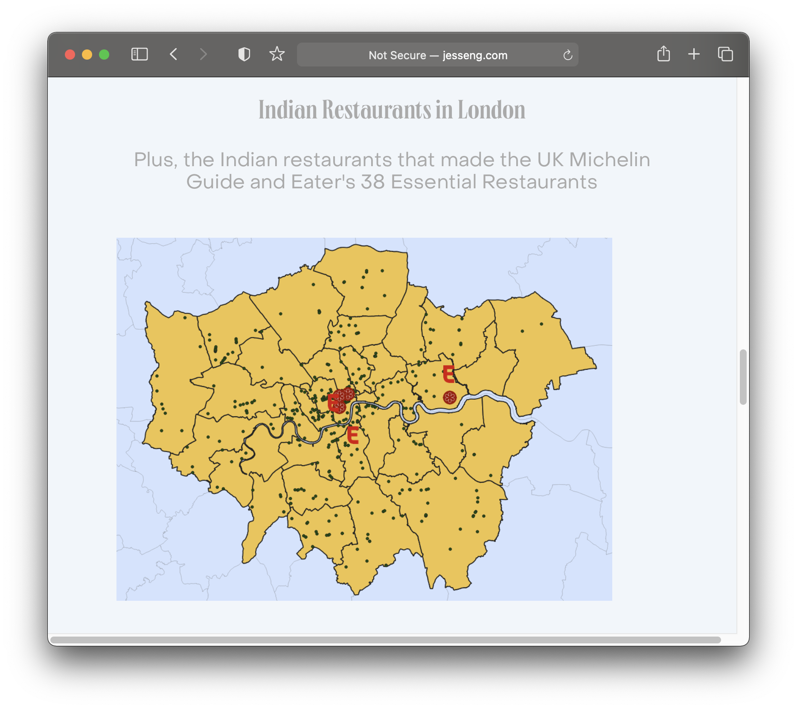
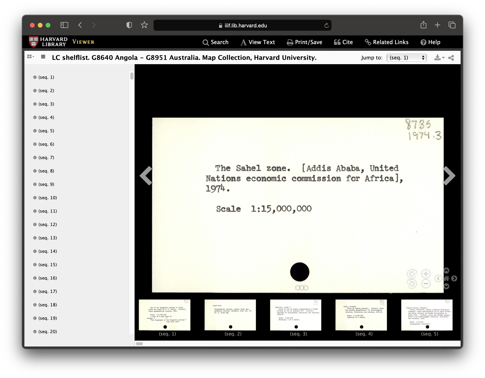
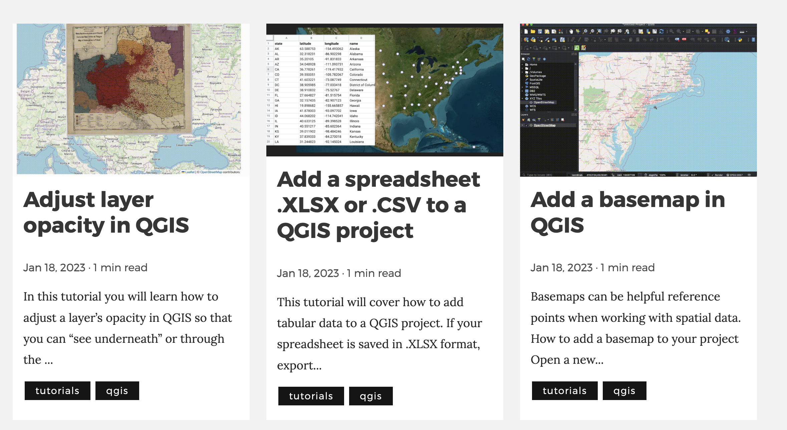
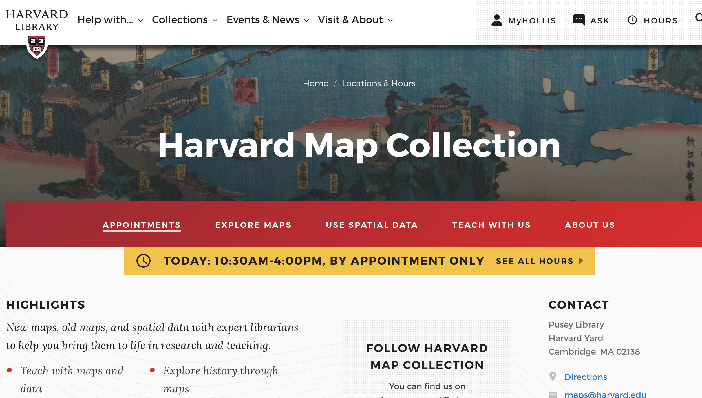

Harvard Map Collection
Informational slides about Harvard Map Collection services and how to make use of them


Classes
GSD: Spatial Analysis

Fall 2021 presentation.

Map created by GSD students Aeshna Prasad, Michael Lidwin, Megan Mcglinchey, and Mehvish Jamal working with the Map Collection.Data management
 OldNYC: Mapping Historic Photographs at the NYPL.
OldNYC: Mapping Historic Photographs at the NYPL.
1880 census from Archive.org.
 ArcGIS Map comparing 1890 atlas to today.
ArcGIS Map comparing 1890 atlas to today.
Harvard Geospatial Library (HGL) - demo

Research



Record from Harvard Map Collection card catalog.Services and Resources
Tutorials

The Harvard Map Collection maintains a series of tutorials, guides, and updates about mapmaking.Consultations

The best way to find maps or data is to make an appointment on the Harvard Map Collection website.Questions
Or, you can follow up with any questions by emailing: